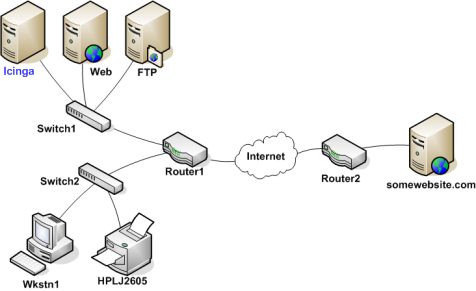
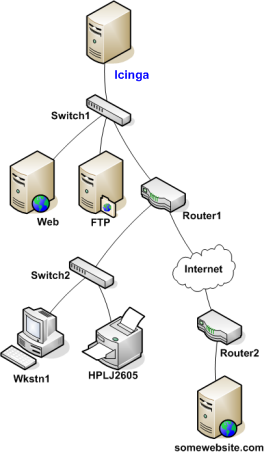
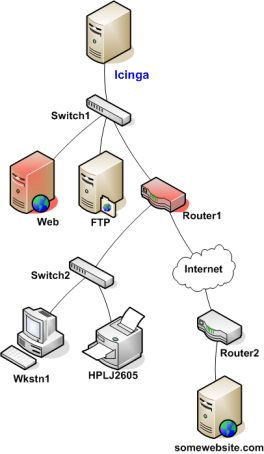
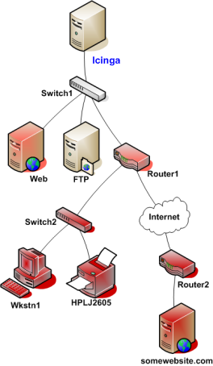

If you've ever work in tech support, you've undoubtably had users tell you "the Internet is down". As a techie, you're pretty sure that no one pulled the power cord from the Internet. Something must be going wrong somewhere between the user's chair and the Internet.
Assuming its a technical problem, you begin to search for the problem. Perhaps the user's computer is turned off, maybe their network cable is unplugged, or perhaps your organization's core router just took a dive. Whatever the problem might be, one thing is most certain - the Internet isn't down. It just happens to be unreachable for that user.
Icinga is able to determine whether the hosts you're monitoring are in a DOWN or UNREACHABLE state. These are very different (although related) states and can help you quickly determine the root cause of network problems. Here's how the reachability logic works to distinguish between these two states...
Take a look at the simple network diagram below. For this example, lets assume you're monitoring all the hosts (server, routers, switches, etc) that are pictured. Icinga is installed and running on the Icinga host.

In order for Icinga to be able to distinguish between DOWN and UNREACHABLE states for the hosts that are being monitored, you'll need to tell Icinga how those hosts are connected to each other - from the standpoint of the Icinga daemon. To do this, trace the path that a data packet would take from the Icinga daemon to each individual host. Each switch, router, and server the packet encounters or passes through is considered a "hop" and will require that you define a parent/child host relationship in Icinga. Here's what the host parent/child relationships look like from the viewpoint of Icinga:

Now that you know what the parent/child relationships look like for hosts that are being monitored, how do you configure Icinga to reflect them? The parents directive in your host definitions allows you to do this. Here's what the (abbreviated) host definitions with parent/child relationships would look like for this example:
define host{
host_name Icinga ; <-- The local host has no parent - it is the topmost host
}
define host{
host_name Switch1
parents Icinga
}
define host{
host_name Web
parents Switch1
}
define host{
host_name FTP
parents Switch1
}
define host{
host_name Router1
parents Switch1
}
define host{
host_name Switch2
parents Router1
}
define host{
host_name Wkstn1
parents Switch2
}
define host{
host_name HPLJ2605
parents Switch2
}
define host{
host_name Router2
parents Router1
}
define host{
host_name somewebsite.com
parents Router2
}
Now that you're configured Icinga with the proper parent/child relationships for your hosts, let's see what happen when problems arise. Assume that two hosts - Web and Router1 - go offline...

When hosts change state (i.e. from UP to DOWN), the host reachability logic in Icinga kicks in. The reachability logic will initiate parallel checks of the parents and children of whatever hosts change state. This allows Icinga to quickly determine the current status of your network infrastructure when changes occur.

In this example, Icinga will determine that Web and Router1 are both in DOWN states because the "path" to those hosts is not being blocked.
Icinga will determine that all the hosts "beneath" Router1 are all in an UNREACHABLE state because Icinga can't reach them. Router1 is DOWN and is blocking the path to those other hosts. Those hosts might be running fine, or they might be offline - Icinga doesn't know because it can't reach them. Hence Icinga considers them to be UNREACHABLE instead of DOWN.
By default, Icinga will notify contacts about both DOWN and UNREACHABLE host states. As an admin/tech, you might not want to get notifications about hosts that are UNREACHABLE. You know your network structure, and if Icinga notifies you that your router/firewall is down, you know that everything behind it is unreachable.
If you want to spare yourself from a flood of UNREACHABLE notifications during network outages, you can exclude the unreachable (u) option from the notification_options directive in your host definitions and/or the host_notification_options directive in your contact definitions.
© 1999-2009 Ethan Galstad, 2009-2017 Icinga Development Team, https://www.icinga.com